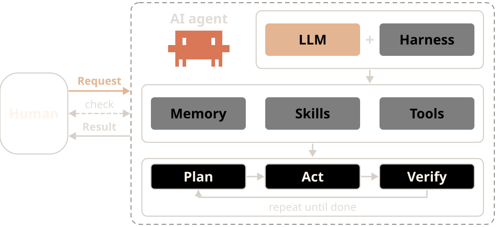
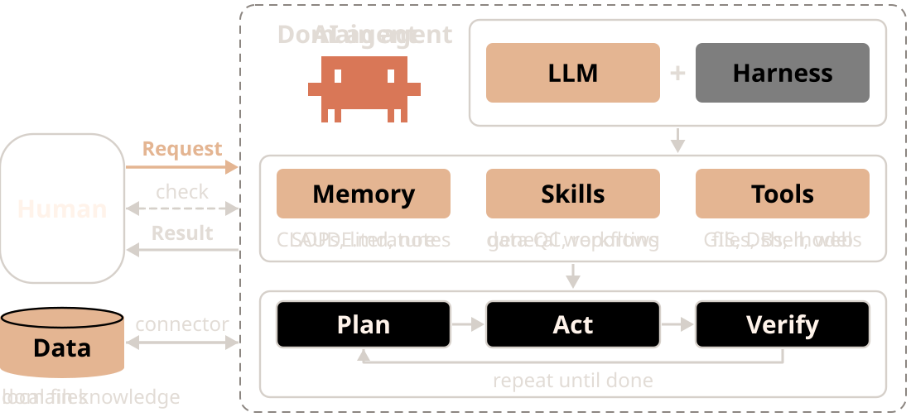
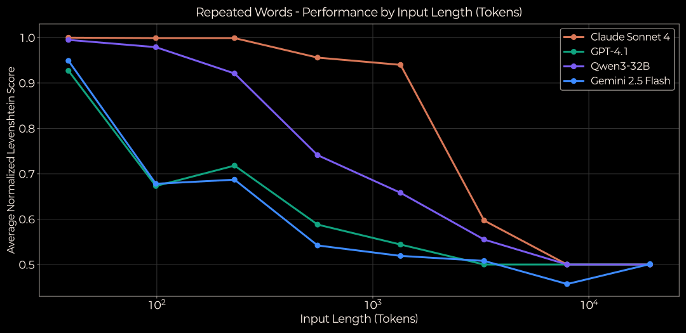
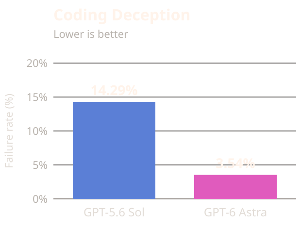
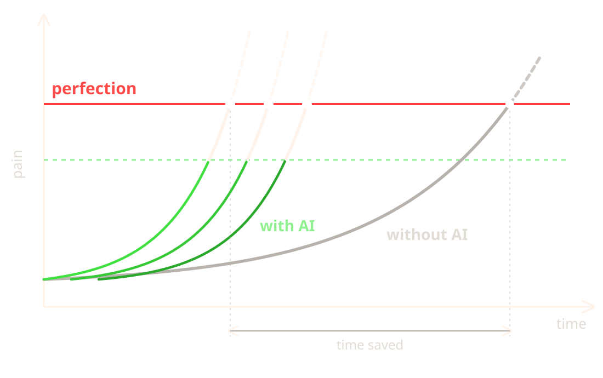
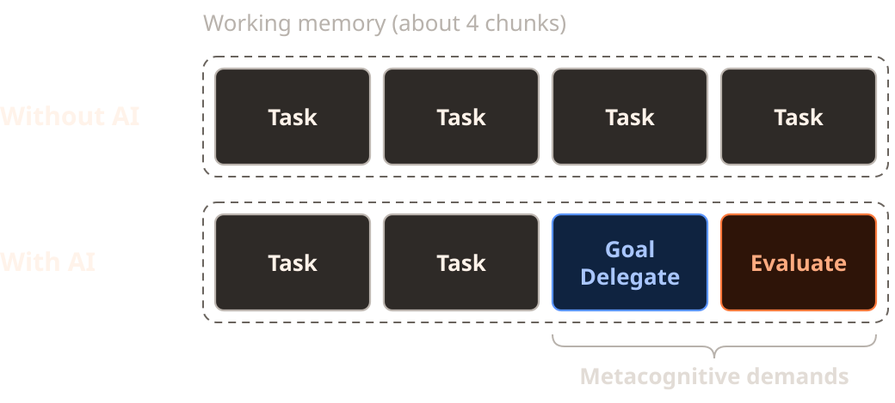
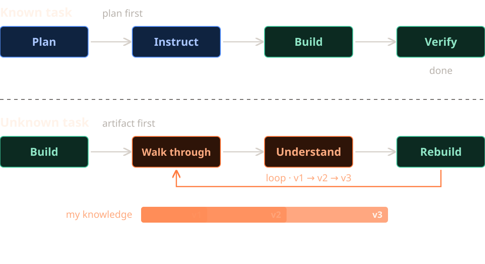

AI 에이전트와 함께 연구하기
대학원생을 위한 생성형 AI 활용

김경호 · 한국환경연구원(KEI)
전남대학교 문화전문대학원 · 2026년 10월
오늘 다룰 것
오늘 다룰 것: AI 에이전트를 연구의 조수로 쓰기 위한 세 가지 질문.
1원리AI는 어떻게 작동하고, 에이전트는 무엇이 다른가
2주의어디서 틀리고, 어떻게 확인하는가
3활용연구에 어떻게 쓰고, 무엇을 밝히는가
전제(Premises)
전제: AI를 사용할 때 받아들이고 있는 세 가지 믿음.
비판: LLM은 의미 없이 다음 단어만 잇는 확률론적 앵무새다
→ 사람의 뇌도 다음 말을 예측한다.
언어 모델은 뇌와 부분적으로 닮았다.
비판: AI를 쓰면 사고력과 추론 능력이 떨어진다
→ AI는 증폭기다. 생각을 맡기면 줄고,
생각을 넓히는 데 쓰면 는다.
비판: AI는 평균적인 결과물만 만든다
→ AI는 평균 이상의 초안을 모두에게 비슷하게 준다.
완성은 사람이 한다.

AI는 예측으로 돕고, 사람은 판단으로 완성한다.
도구는 같아도, 쓰는 방식이 결과를 가른다.
용어(Terms)
| 용어 | 뜻 |
|---|
| LLM(대규모 언어 모델) | 방대한 글을 학습해 다음 말을 예측하며 글을 만드는 AI 모델 |
| 토큰(Token) | 모델이 글을 나눠 처리하는 단위(단어나 그 일부) |
| 프롬프트(Prompt) | AI에게 주는 질문이나 지시 |
| 컨텍스트(Context) | 답을 만들 때 AI가 함께 보는 글 전체(대화, 올린 파일 등) |
| 터미널(Terminal) | 마우스 대신 글자로 명령을 입력해 컴퓨터를 다루는 창 |
| CLI(명령줄 인터페이스) | 터미널에서 명령어로 프로그램을 쓰는 방식(예: Claude Code, Codex) |
| 마크다운(Markdown) | # 제목, - 목록처럼 기호로 서식을 적는 간단한 글 형식 |
| HTML | 웹 페이지를 만드는 언어. AI가 표·도식·화면을 만들어 보여 줄 때 쓴다 |
LLM(Large Language Model)
LLM: 방대한 글을 학습해, 앞의 글을 보고 다음 말을 예측하며 이어 쓰는 모델.
LLM은 수많은 글에서 다음 단어
맞히기를 반복하며 언어의 패턴과
지식을 익힌다.
입력된 글을 보고 다음 말의 확률을
계산해 하나를 출력한다. 출력은 다시
입력에 붙어 다음 예측에 쓰인다.
그래서 그럴듯한 글을 잘 쓴다. 다만
그럴듯함이 곧 사실은 아니다.
※ 자기회귀(Autoregressive): 자기가 낸
출력을 다시 입력으로 받아 다음을
예측하는 방식

입력으로 다음 말의 확률을 계산해 출력, 출력은 다시 입력이 되어 반복(수치는 예시)
AI 에이전트(AI agent)
AI 에이전트: LLM에 도구와 기억을 붙여, 목표를 스스로 계획·실행·검증하게 한 시스템.
에이전트는 LLM과 하네스로 이루어진다.
LLM이 다음 행동을 판단하면, 하네스가
이를 실행하고 결과를 돌려준다.
요청을 받으면 LLM이 기억(지침 파일·
작업 기록), 스킬(작업 절차), 도구(파일·
셸·검색) 중 필요한 것을 골라 쓴다.
사람이 목표를 주면 에이전트는 계획,
실행, 검증을 끝날 때까지 반복하고,
완료되면 결과를 보고한다.
※ 하네스(Harness): 모델을 감싸 도구를
제공하고 컨텍스트를 관리하는 프로그램
(Claude Code, Codex 등)

사람의 요청에 기억·스킬·도구를 골라 쓰며 계획·실행·검증 반복, 결과 보고
도메인 특화 에이전트(Domain-specific agent)
도메인 특화 에이전트: 범용 에이전트에 한 분야의 지식·도구·데이터·검증을 결합한 에이전트.
모델을 새로 학습시키기보다, 하네스에
그 분야의 지침·스킬·도구를 바꿔 끼워
만든다.
화학 에이전트는 화학 도구 18개를,
생의학 에이전트는 도구·소프트웨어·
DB 300여 개를 갖춘다.
결과는 그 분야의 기준(실험, 관측,
전문가)으로 검증해야 한다. LLM
평가는 유창한 답에 속기 쉽다.
※ 버티컬 AI 에이전트(Vertical AI
agent): 산업 하나에 깊게 특화된
에이전트를 부르는 업계 용어

같은 LLM·하네스, 둘째 칸과 연결 데이터만 환경 연구용으로 교체
컨텍스트(Context)
컨텍스트: LLM이 출력을 생성할 때 참조하는 토큰의 집합.
입력과 지금까지 생성한 출력을
모두 포함한다.
내가 쓴 질문, 올린 파일, AI가 앞서 한
답이 모두 컨텍스트에 들어간다.
학습 데이터가 아니라, 이번 호출에
넣어 준 토큰만 본다.
※ 토큰(Token): 모델이 처리하는
최소 단위 (영어 약 3.5자 = 1토큰)

턴마다 입력·출력 누적, 컨텍스트 증가
컨텍스트 창(Context window)
컨텍스트 창: 모델이 새 텍스트를 생성할 때 참조할 수 있는 텍스트의 양.
모델의 작업 기억.
입력과 출력의 합이 200K 또는
1M 토큰을 넘을 수 없다.
※ 1M: Opus·Sonnet 4.6 이후
※ 200K: Sonnet 4.5, Haiku 4.5 등
컨텍스트 부패(Context rot):
토큰이 늘수록 정확도와 회상이
떨어지는 현상
※ 어텐션(Attention): 토큰 간 관련성을
따져 중요한 곳에 집중하는 장치.
토큰이 많을수록 분산된다.

입력 토큰 증가에 따라 모든 모델의 점수 하락
컨텍스트 엔지니어링(Context engineering)
컨텍스트 엔지니어링: AI가 볼 정보를 골라 넣고, 필요 없는 것은 빼는 일.
적어 두기(Write)연구 목적·용어·규칙을 문서로 만들어 매번 함께 준다
골라 주기(Select)지금 작업에 필요한 논문과 자료만 올린다
줄이기(Compress)대화가 길어지면 요약을 받아 새 대화에서 이어 간다
나누기(Isolate)주제가 다르면 대화나 프로젝트를 따로 연다
많이 넣을수록 좋은 것이 아니라, 관련 있는 것만 넣을수록 좋다.
행동 경향(Behavioral tendencies)
행동 경향: 학습 과정에서 형성되어 LLM이 반복적으로 보이는 행동.
아첨(Sycophancy): 사용자의 짐작에 맞춰 진단을 바꾼다
→ 의견을 앞세우지 않고 중립적으로 질문
조기 완료(Premature completion): 테스트 없이 “완료”를 보고한다
→ 테스트 실행 결과로 완료 여부 확인
환각(Hallucination): 존재하지 않는 API나 패키지를 사용한다
→ 공식 문서 제공, 실행으로 검증
과잉 열의(Overeagerness): 요청하지 않은 수정과 파일을 추가한다
→ 작업 범위와 금지 사항 명시
보상 해킹(Reward hacking): 테스트를 고치거나 기대값을 하드코딩한다
→ 테스트 변경 여부를 diff로 확인

허위 완료 보고 비율, 최신 모델에서 감소했으나 0은 아님
획일화(Homogenization)
획일화: AI 도움을 받은 글이 각각은 나아지지만 서로 비슷해지는 현상.
AI 아이디어를 받아 쓴 이야기는
더 새롭고 쓸모 있다는 평가를 받았다.
원래 창의성이 낮은 사람일수록 컸다.
그러나 AI 도움을 받은 이야기들은
서로 더 비슷해졌다.
AI는 평균 이상의 초안을 모두에게
비슷하게 준다. 무엇을 남기고 고칠지
판단하는 것이 사람의 몫이다.
※ 실험: 293명이 8문장 이야기를 쓰고
600명이 평가, AI 아이디어 0·1·5개

검증(Verification)
검증: AI의 결과는 그럴듯해도 틀릴 수 있으므로, 사람이 직접 확인해야 한다.
AI가 쓴 글의 참고문헌을 확인하니
상당수가 없는 논문이거나, 저자·연도·
쪽수가 틀렸다.
최신 모델도 다섯 중 하나를 지어냈고,
낯설고 좁은 주제일수록 더 많았다.
틀린 인용도 형식은 그럴듯해서,
읽기만 해서는 알아채기 어렵다.
※ 검증 방법: 인용은 원문에서 직접
찾아 대조하고, 수정은 바뀐 부분만
표시하게 해 하나씩 확인한다.

AI가 쓴 글의 참고문헌 중 지어낸 것과 정보가 틀린 것의 비율
논문 작성 단계별 활용(Writing workflow)
논문 작성 단계별 활용: 단계마다 AI에 맡길 것과 내가 직접 할 것을 나누는 것.
| 단계 | AI에 맡길 것 | 내가 할 것 |
|---|
| 주제 설정 | 질문 다듬기, 예상 반론 받아 보기 | 연구 질문을 정한다 |
| 문헌 검토 | 논문 요약, 쟁점·입장 정리 | 원문을 읽고 인용 부분을 대조한다 |
| 구성 | 목차 검토, 논리의 빈틈 지적 | 주장과 순서를 정한다 |
| 초안 | 내가 쓴 초안에 대한 비판 | 초안은 직접 쓴다 |
| 교정 | 문장 다듬기, 용어·표기 일관성 | 수정안을 골라 받아들인다 |
| 인용 확인 | 본문 인용과 참고문헌 목록 대조 | 모든 출처를 원문으로 확인한다 |
AI에 무엇을 맡겼는지는 기록해 두고, 논문에 밝힌다.
사람 개입(Human in the loop)
사람 개입: AI의 작업 과정에 사람이 판단과 검증으로 참여하는 것.
AI는 결과물의 대부분을 빠르게 만들지만,
마지막 구간은 여전히 사람의 판단으로
채워진다.
완성에 가까워질수록 한 단계를 올리는
데 드는 노력은 줄지 않는다. 데모는
쉽고, 완성은 어렵다.
AI가 줄여 준 시간만큼 여러 작업을
동시에 진행할 수 있으며, 이때 병목은
작성에서 검토로 옮겨간다.
※ 나인의 행진(March of nines):
신뢰도를 90%에서 99%, 99.9%로 한
단계 올릴 때마다 비슷한 노력이 드는 현상

AI는 기준 아래까지 빠르게, 남은 구간은 사람이 채움, 여러 과정 병렬 진행
메타인지 부담(Metacognitive demands)
메타인지 부담: AI와 일하는 동안 무엇을 원하고 맡길지, 결과가 맞는지 계속 판단해야 하는 부담.
AI가 작업을 대신하는 만큼, 목표를
정하고 일을 나누고 결과를 평가하는
생각은 사람에게 남는다.
이 생각이 작업 기억을 함께 차지하면서,
정작 문제를 깊이 생각할 여유가
줄어든다.
원하는 것을 정리하지 않고 먼저 물으면,
그 생각 자체를 건너뛰게 된다.
※ 메타인지(Metacognition): 자신의
생각을 살피고 조절하는 생각

AI와 일하면 작업 기억의 일부를 목표 설정과 결과 평가가 차지
역방향 학습(Learning backward)
역방향 학습: 결과물을 먼저 만들게 하고, 거꾸로 읽으며 이해한 뒤 다시 고치는 작업 방식.
잘 아는 과제는 목표와 계획을 세워
지시할 수 있지만, 잘 모르는 과제는
무엇을 지시할지조차 정하기 어렵다.
이때는 결과물을 먼저 받고, 거꾸로
확인하며 이해한 만큼 다음 버전을
요청한다.
버전이 올라갈수록 결과물과 함께
내 지식도 늘어난다.
다만 결과물을 그대로 받아쓰면 남는
것이 없고, 읽고 이해할 때만 는다.

아는 과제는 계획에서 출발, 모르는 과제는 결과물에서 출발해 이해와 수정을 반복
AI 사용 공개(AI disclosure)
AI 사용 공개: 어떤 AI를 어디에 어떻게 썼는지 논문에 밝히는 일.
전남대 글쓰기 과제 가이드(2025.9)는
사실 검증, 사용 사실 공개, 대화
기록 보관을 요구한다.
교육부·한국연구재단 가이드(2026.6)는
대학원생을 포함한 연구자에게
책임 있는 사용 준칙 10가지를 둔다.
주요 학술지는 모두 AI를 저자로
인정하지 않고, 내용과 인용의
책임은 사람에게 있다고 명시한다.
학위논문은 학과·지도교수 지침과
투고할 학술지 규정을 먼저 확인한다.
| 원칙 | 근거 |
|---|
| AI는 저자가 될 수 없다 | 한국연구재단, COPE, ICMJE, Elsevier, Nature |
| 내용·인용의 책임은 나에게 | 한국연구재단, ICMJE, Elsevier, 전남대 |
| 어디에 어떻게 썼는지 공개·기록 | 한국연구재단, COPE, ICMJE, 전남대 |
| 미공개 데이터·개인정보는 넣지 않기 | 한국연구재단, 전남대 정보화본부, Nature, Elsevier |
| 내 학교·학술지 규정 먼저 확인 | 한국연구재단, 전남대(수업계획서) |
정리
정리: AI는 연구의 조수다. 판단과 완성은 내가 한다.
1자료를 준다내 논문과 문헌을 줄수록 답이 정확해진다
2먼저 쓴다초안은 내가 쓰고, AI에게 비판받는다
3원문으로 확인한다인용과 사실은 반드시 원문과 대조한다
4기록하고 밝힌다AI를 어디에 썼는지 남기고, 논문에 공개한다